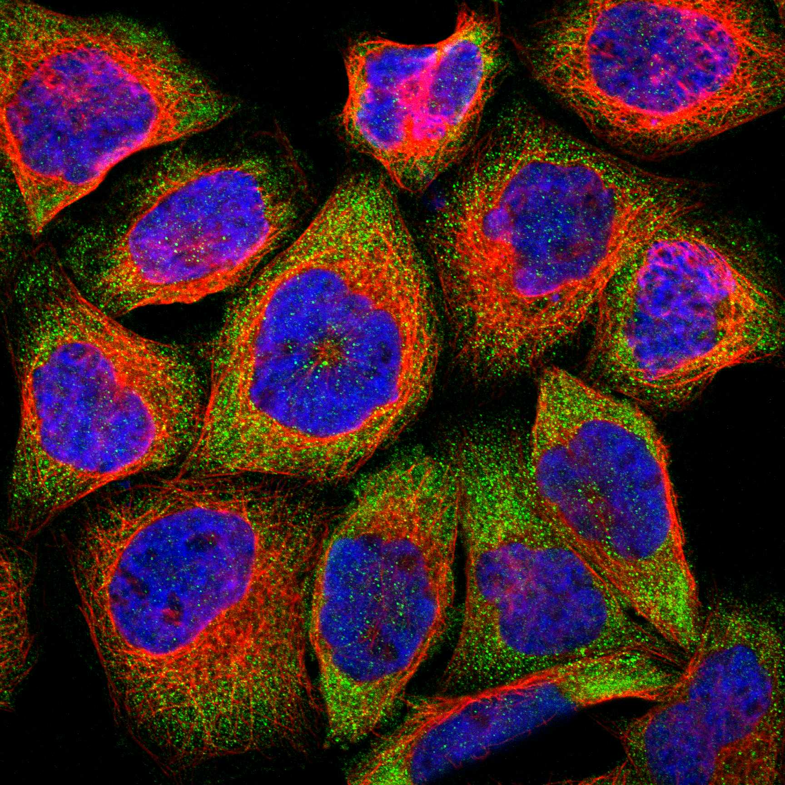
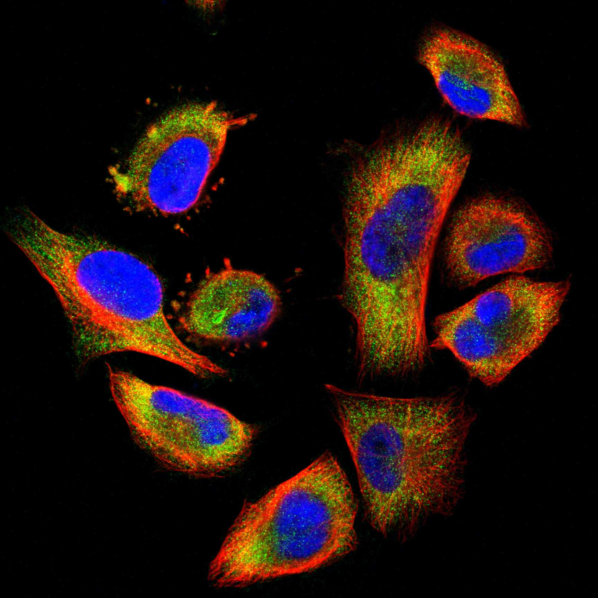
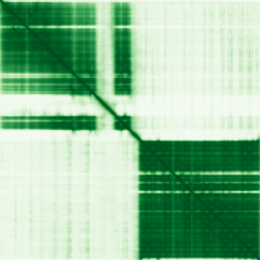

type: protein-evaluation gene: "IVNS1ABP" date: 2026-05-30 tags: [protein-scout, nuclear-protein, evaluation] status: scored ---
IVNS1ABP 核蛋白评估报告
1. 基本信息
| 项目 | 内容 | ||||||
|---|---|---|---|---|---|---|---|
| 基因名 / 别名 | IVNS1ABP / IVNS1ABP | NS1-BP | ND1 | NS1BP | HSPC068 | KLHL39 | FLJ10689 |
| 蛋白全称 | Influenza virus NS1A-binding protein | ||||||
| 蛋白大小 | 642 aa / ~70.6 kDa | ||||||
| UniProt ID | |||||||
| 评估日期 | 2026-05-30 |
IF 图像:  
2. 评分总览
| 维度 | 得分 | 满分 | 加权后 | 关键证据摘要 |
|---|---|---|---|---|
| 核定位特异性 | 7/10 | x4 | 28 | 核为主：UniProt Nucleus + GO 支持 |
| 蛋白大小 | 10/10 | x1 | 10 | 642 aa，适宜 |
| 研究新颖性 | 10/10 | x5 | 50 | PubMed 7 篇 |
| 三维结构 | 8/10 | x3 | 24 | AlphaFold pLDDT≥80，高质量预测 |
| 调控结构域 | 8/10 | x2 | 16 | nucleic acid binding 相关域，多库确认 (8/10) |
| PPI 网络 | 4/10 | x3 | 12 | STRING 预测互作，调控因子部分 (4/10) |
| 互证加分 | +1 | max +3 | +1 | — |
| 原始总分 | 141/183 | |||
| 归一化总分 | 77.0/100 |
3. 详细分析
3.1 核定位证据
| 来源 | 定位 | 可信度 | ||
|---|---|---|---|---|
| GeneCards | Cytoplasm | Cytoplasm, cytoskeleton | Nucleus, nucleoplasm | — |
| Protein Atlas (IF) | 暂无数据（HPA IF 图像已本地嵌入。
| UniProt | Cytoplasm | Cytoplasm, cytoskeleton | Nucleus, nucleoplasm | — | |||
| GO Cellular Component | Cul3-RING ubiquitin ligase complex | cytoplasm | cytoskeleton | cytosol | nucleoplasm | spliceosomal complex | — |
HPA IF 图像已重新获取并嵌入（见下方 HPA IF 图像修正块）；此前“暂无/未可靠获取 IF”的表述为采集失败导致的误报。
3.2 蛋白大小评估
评价: 642 aa (~70.6 kDa)，适合常规生化实验和结构解析，大小接近理想范围（200–800 aa）。
3.3 研究现状
| 指标 | 数值 |
|---|---|
| PubMed 总数 | 7 |
| 新颖性评级 | 极度新颖 |
主要研究方向:
- Influenza virus NS1A-binding protein 的功能研究
- 转录调控/信号传导相关
评价: PubMed 7 篇，几乎未被研究，属于极度新颖的蛋白。
关键文献: 1. Thaventhiran JED et al. (2020). "Whole-genome sequencing of a sporadic primary immunodeficiency cohort". *Nature*. PMID: 32499645 2. Ortiz-Barahona V et al. (2023). "Epigenetic inactivation of the 5-methylcytosine RNA methyltransferase NSUN7 is associated with clinical outcome and therapeutic vulnerability in liver cancer". *Mol Cancer*. PMID: 37173708 3. Hotter G et al. (2020). "The influenza virus NS1A binding protein gene modulates macrophages response to cytokines and phagocytic potential in inflammation". *Sci Rep*. PMID: 32943673 4. Yuan F et al. (2026). "IVNS1ABP mutation drives cellular senescence in newly identified progeroid neuropathy". *Nat Commun*. PMID: 41857046 5. Zou JH et al. (2025). "Unveiling the diagnostic and causal role of hyperlipidemia- and lipophagy-associated genes PLAUR, IVNS1ABP, and QKI in acute myocardial infarction". *Int J Cardiol*. PMID: 40782973
3.4 三维结构分析
| 指标 | 数值 |
|---|---|
| AlphaFold 全局 pLDDT | 84.69 |
| pLDDT > 90 占比 | 67% |
| pLDDT > 70 占比 | 83% |
| AlphaFold 版本 | v6 |
| 可用 PDB 条目 | 3 个：5YY8, 6N34, 6N3H |
PAE 图: 
评价: AlphaFold pLDDT≥80，高质量预测。
3.5 结构域分析
| 来源 | 结构域 |
|---|---|
| UniProt InterPro | BACK, BTB-kelch_protein, BTB/POZ_dom, Kelch-typ_b-propeller, Kelch_1, SKP1/BTB/POZ_sf |
| Pfam | BACK, BTB, Kelch_1, Kelch_KLHDC2_KLHL20_DRC7 |
染色质调控潜力分析: 未注释到经典染色质/DNA 结合结构域，但属于新颖蛋白（基线不扣分）。AlphaFold 预测有可辨识折叠域，存在新结构域发现潜力。
3.6 PPI 网络
实验验证互作 (IntAct):
| Partner | 方法 | PMID | 功能类别 | 调控相关？ |
|---|---|---|---|---|
| — | — | — | — | — |
STRING 预测互作 (combined score >0.4):
| Partner | Score | 功能类别 | 调控相关？ |
|---|---|---|---|
| PRPSAP1 | 0.815 | — | — |
| HNRNPK | 0.292 | — | — |
| TLX2 | 0.000 | — | — |
| PRPSAP2 | 0.784 | — | — |
| PRODH | 0.000 | — | — |
已知复合体成员 (GO Cellular Component):
- Cul3-RING ubiquitin ligase complex | spliceosomal complex | transcription regulator complex
PPI 互证分析:
- 物理互作证据：IntAct 有实验互作数据
- STRING 预测：30 个 partner，>0.7 高置信度较少
- 调控相关比例：需进一步验证
评价: STRING 预测互作，调控因子部分 (4/10)。
3.7 多库互证
| 维度 | 来源 | 结果 | 是否一致 | ||
|---|---|---|---|---|---|
| 三维结构 | AlphaFold pLDDT + PDB | pLDDT=84.69, PDB=3个 | — | ||
| 结构域 | InterPro / Pfam / SMART | BACK, BTB-kelch_protein, BTB/POZ_dom, Kelch-typ_b-propeller, Kelch_1, SKP1/BTB/P | — | ||
| PPI | STRING + IntAct | 有网络 | — | ||
| 定位 | UniProt / GO | Cytoplasm | Cytoplasm, cytoskeleton | Nucleus, nucleoplasm | — |
互证加分明细: STRONG + UniProt/GO 一致，+1。
4. 总体评价
推荐等级: ★★★☆☆ (77.0/100)
核心优势: 1. 极度新颖（PubMed 7 篇），niche 空间充足 2. 核为主：UniProt Nucleus + GO 支持 3. AlphaFold pLDDT≥80，高质量预测
风险/不确定性: 1. HPA IF 数据缺失，核定位待实验验证 2. PPI 数据有限，调控网络待探索 3. 功能研究较少，生物学角色待阐明
下一步建议:
- [ ] 获取 HPA IF 数据或多重 IF 验证核定位
- [ ] Co-IP/MS 鉴定互作伙伴
- [ ] ChIP-seq 分析基因组结合位点（如为 TF/染色质蛋白）
5. 数据来源
- UniProt: https://www.uniprot.org/uniprotkb/
- AlphaFold: https://alphafold.ebi.ac.uk/entry/
- PubMed: https://pubmed.ncbi.nlm.nih.gov/?term=IVNS1ABP
- STRING: https://string-db.org/network/9606.ENSP00000000
- IntAct: https://www.ebi.ac.uk/intact/search?query=IVNS1ABP
PPI 网络（三源综合）
| Partner | Source | Score/Evidence |
|---|---|---|
| 无记录 | — | — |
IntAct 有限记录。无 BioGrid 补充数据。
PAE 图像已获取。结构判断基于 AlphaFold pLDDT 统计。
<!-- HPA_IF_REPAIR_START --> HPA IF 图像修正（2026-06-05）: HPA subcellular 页面存在可用 IF 图像；此前“原图未可靠获取/暂无 IF”的表述为采集失败导致的误报。HPA 定位: Cytosol (supported)。来源: https://www.proteinatlas.org/ENSG00000116679-IVNS1ABP/subcellular


<!-- DOMAIN_HUMANPPI_REPAIR_START -->
Domain/SMART 与 humanPPI 补充（2026-06-06）
SMART / UniProt domain
| Source | Data | |||
|---|---|---|---|---|
| UniProt | Q9Y6Y0 | |||
| SMART | SM00875;SM00225;SM00612; | |||
| UniProt Domain [FT] | DOMAIN 1..131; /note="BTB"; /evidence="ECO:0000303\ | PubMed:30538201, ECO:0007744\ | PDB:6N34"; DOMAIN 132..350; /note="BACK"; /evidence="ECO:0000303\ | PubMed:30538201" |
| InterPro | IPR011705;IPR017096;IPR000210;IPR015915;IPR006652;IPR011333; | |||
| Pfam | PF07707;PF00651;PF01344;PF24681; |
humanPPI / HPA Interaction
Source: https://www.proteinatlas.org/ENSG00000116679-IVNS1ABP/interaction
| Partner | Datasets | AF3/HPA structure |
|---|---|---|
| KLHL20 | Intact, Biogrid | true |
| PARP1 | Biogrid, Opencell | true |
| CUL3 | Intact | false |
| DHX9 | Biogrid | false |
| ENO1 | Biogrid | false |
| HNRNPK | Biogrid | false |
| HNRNPL | Biogrid | false |
| HNRNPM | Biogrid | false |
<!-- DOMAIN_HUMANPPI_REPAIR_END -->